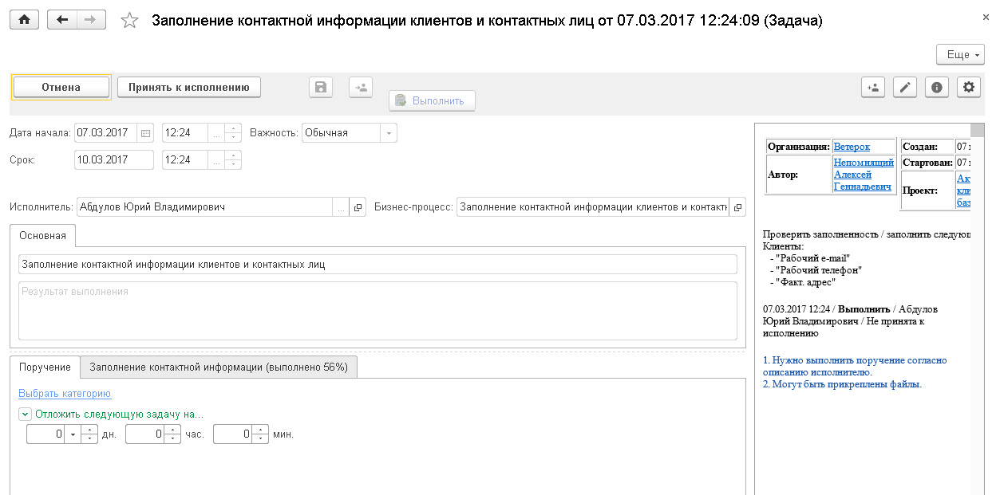

Заполнение контактной информации ответственными сотрудниками.
Заполнение контактной информации ответственными сотрудниками.Заполнение контактной информации ответственными сотрудниками.
После выдачи поручения на заполнение контактной информации, у исполнителей все выданные задачи отображаются в АРМе Мои дела. По двойному клику по выбранной задаче, открывается её форма.

В форме задачи указана информация о сути поручения, авторе поручения, а также сроке и важности выполнения задачи. Для начала выполнения поручения необходимо выбрать команду "Принять к исполнению"
После этого откроется карточка клиента. Для актуализации контактной информации о клиенте необходимо заполнить недостающую информацию. Для этого можно использовать следующие пути:
· Просмотреть историю взаимоотношений с клиентом по команде Документы клиента. Обычно в истории имеется информация о телефонах и/или адресах email из документов Событие и электронных письмах.
Примечание: Клиенты должны быть введены в клиентскую базу только в том случае, когда известны один или более каналов связи с клиентом. Рекомендации в методике рассчитаны на то, что данный регламент по вводу новых клиентов выполняется.
В случае, когда недостающие контактные данные отсутствуют, необходимо по имеющимся каналам связаться с клиентом для заполнения недостающей информации.
При наличии электронной почты выполнить команду "Написать Email"
Для этого рекомендуется настроить шаблон для заполнения письма с текстом
Примечание: В переписке с клиентами рекомендуется всегда использовать персональное обращение. Для этого используются различные теги в шаблонах, как показано в примере %ПОЛУЧАТЕЛЬ_ИМЯ%. При заполнении вместо тега подставляется ФИО клиента. Но нужно использовать теги для клиентов физических лиц.
При наличии номера телефона выполнить команду "Позвонить"
В результате вариантов уточнения контактных данных по телефону карточка должна быть заполнена
Примечание: В случае отправки письма клиенту достаточно отправить письмо и продолжать обрабатывать других клиентов. Через пару рабочих дней достаточно для еще не обработанных клиентов выполнить тот же порядок действий. В случае, если от клиента был получен ответ – он будет отображаться в карточке клиента по команде Документы клиента.
После закрытия карточки клиента с заполненной контактной информацией, в списке клиентов в форме задачи будут выделены зеленым цветом виды контактной информации, которые были заполнены у клиента, а также будет рассчитан общий процент выполнения поручения.
Итак, были выполнены действия по уточнению контактной информации для создания клиентской базы. Следующий раздел описывает процесс регистрации новых клиентов и историю взаимоотношений с ними.